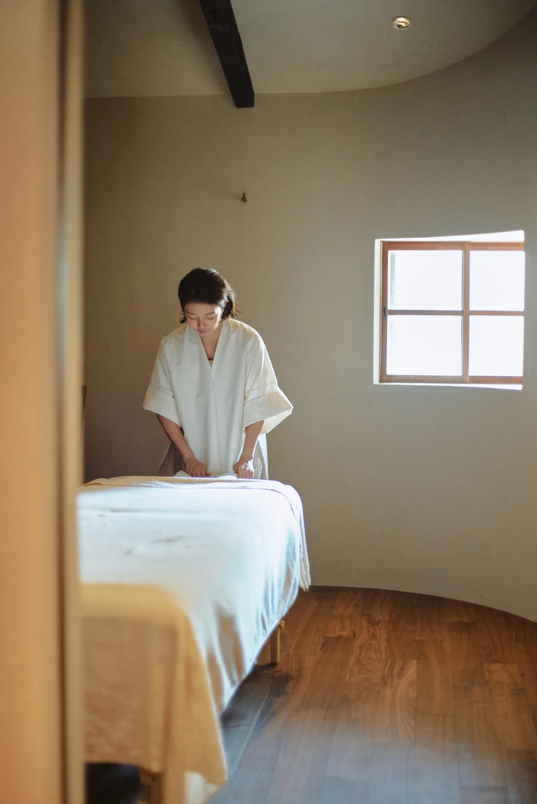
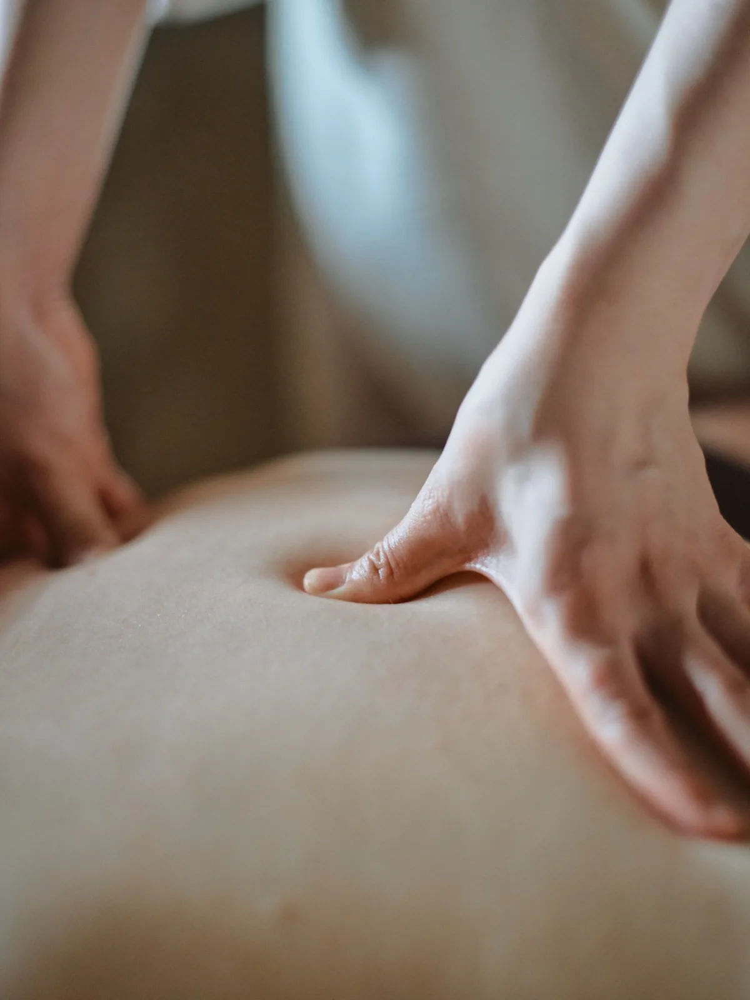
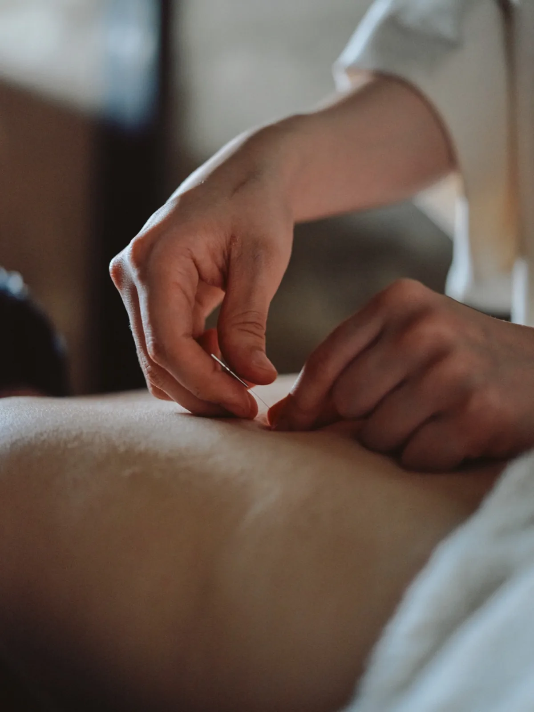
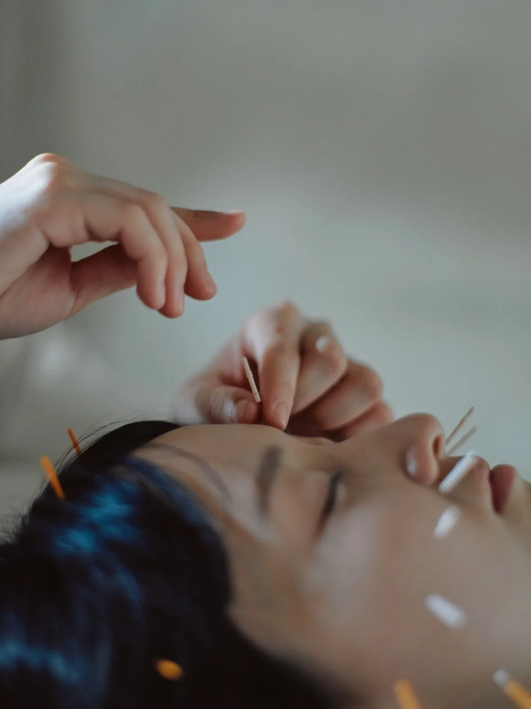
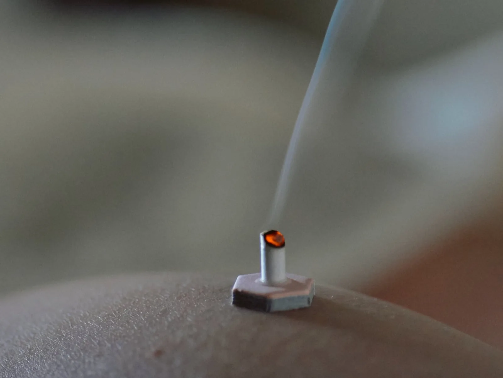
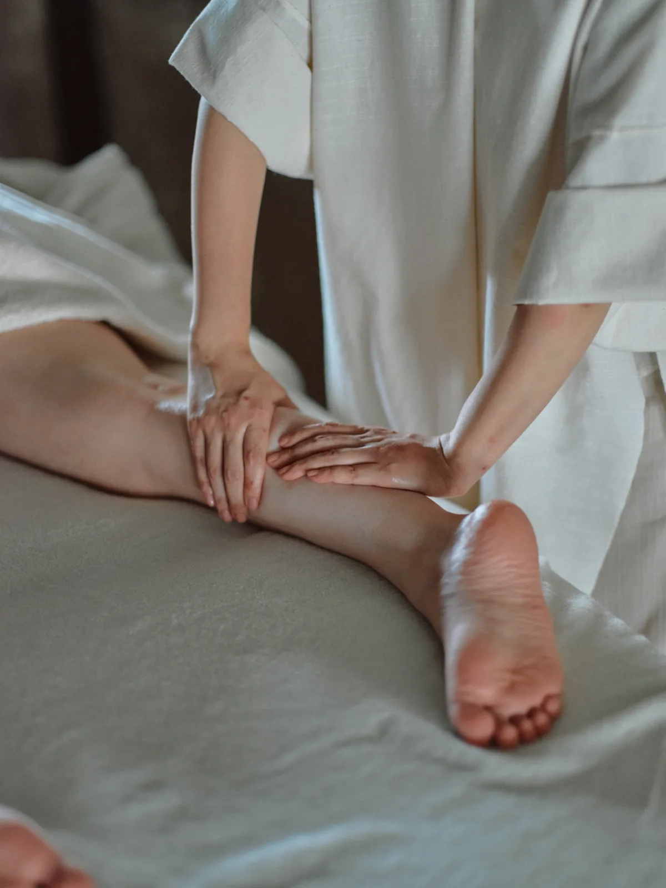
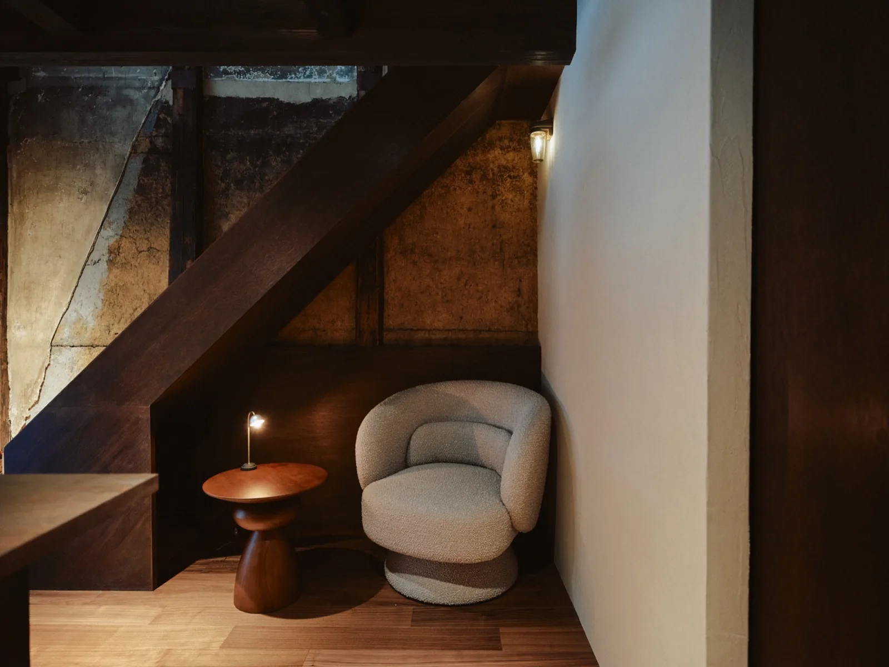
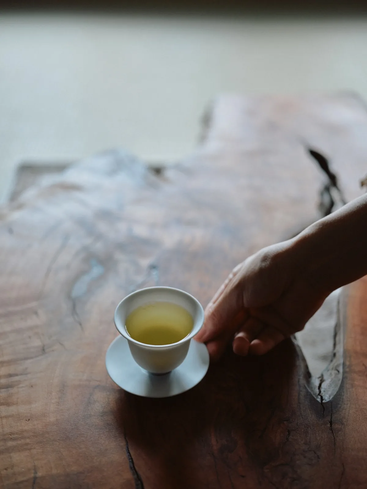
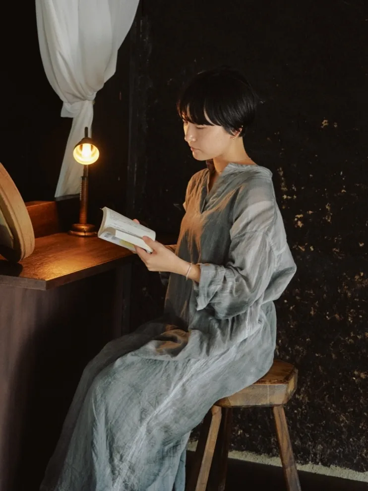

Holistic Acupuncture
And Aromatherapy Salon
— Kyoto
Holistic Acupuncture
And Aromatherapy Salon
— Kyoto

ゆるむ、きづく、ととのう
selfは
自分と向き合って
ケアをする人のための場所です。
Soften, notice, come into balance.
self is a place to pause,
face yourself,
and care for who you are.

selfのボディケアは鍼・灸・オイルトリートメントを組み合わせて行います。
心地いい時間を通して身体を整えることで、いまの自分の心と身体の状態に気づき、
改めて本来の自分と向き合える状態をつくります。
どこかが辛い時も、もっと軽やかな自分で過ごしたい時も、ぜひいらしてください。
はじめて鍼灸を体験される方も安心して受けていただけます。
self's body care combines acupuncture, moxibustion, and oil treatment.
As your body settles into comfort, you begin to notice how your mind and body feel today — and find yourself ready to face who you really are.
Come when something is weighing on you, and just as much when you simply want to feel lighter.
First-time acupuncture guests are always welcome, and in good hands.




鍼灸とオイルトリートメントで心地よく体が解けると
本音に気づいたり、
新しい感情に出会うことができます。
ケアの後は、お茶を飲みながら、美しいご自身と緩やかなセルフタイムをお過ごしください。As acupuncture and oil treatment gently ease the body,
you may notice true feelings, or meet emotions you didn't expect.
Afterward, unwind with a cup of tea — a quiet self-time, just for you.



中目黒にある姉妹店です。
東京にお越しの際はぜひお立ち寄りください。
Our sister salon is in Nakameguro.
Please stop by when you're in Tokyo.
ご予約は専用ページまたはLINEにてお問い合わせください。For reservations, please reach us via our booking page or LINE.